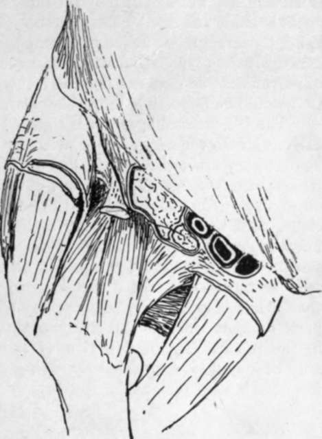

The Hip Joint
Description
This section is from the book "The Anatomy Of The Human Skeleton", by J. Ernest Frazer. Also available from Amazon: The anatomy of the human skeleton.
The Hip Joint
A simple ball-and-socket joint, in which the spherical head of the femur works in a deep cavity, and the bones are held together not only by the atmospheric pressure, that is able to act on them as a result of the close fitting of the surfaces, but also by exceedingly strong transversely-arranged ligaments which are confined to the front aspect of the joint and are tight in the upright position. The bony acetabulum is further deepened by the fibro-cartilaginous cotyloid ligament on its rim, and this is continued across the cotyloid notch as the fibrous transverse ligament. The greater part of the spherical head is thus received in the cavity, and the ligamentous margin of the cavity is somewhat constricted to be applied to it. Outside the cotyloid ligament is the orbicular zone of circular fibres of the capsule, which is a broad band extending to the neck of the bone (Fig. 105). This band is not as a whole continuous with the cotyloid ligament, but is lined by synovial membrane which passes in on the superficial aspect of the cotyloid ligament (in the posterior part of the joint) and is then reflected back over it on to its deep or articular surface.
The circular band appears to derive its fibres from the deep tendons of the gluteal musculature and from the reflected head of the Rectus (Fig. 105). At the lower part of the neck many of its fibres pass into the inferior retinaculum. It covers in the synovial membrane on the neck and closely surrounds the bone, thus acting as a kind of suction pad in resisting separation between the two bones.
The transverse fibres cover the circular zone in front : they are transverse, or nearly so, to the plane of the joint, but they are more nearly vertical in their relation to outside planes. They form a broad and very thick mass of fibres extending from the front margin of the innominate bone to the anterior intertrochanteric line. The mass varies in thickness and direction of its fibres, those attached to the anterior inferior spine being exceedingly thick and diverging to reach the intertrochanteric line, while further in the fibres attached to the upper pubic ramus are thinner and converge to the lower end of the intertrochanteric line and the recurved part of it: the thick part is termed the ilio-femoral band or Y-shaped ligament of Bigelow, and the inner one is the pubo-femoral band.
The ilio-femoral ligament receives some fibres of Iliacus, which lies with the Psoas on its front surface. The pubofemoral band is covered by Pectineus and near the femur by Psoas. The tendon of Rectus lies on the ilio-femoral band outside Iliacus, and external to the tendon the joint is covered by Gluteus minimus. Aponeurotic fasciae cover the Gluteus and the Ihacus and are attached to the Rectus tendon between them, passing back on each side of this to gain attachment to the capsule ; another sheet from the pubic fascia or Pectineus fascia goes under Psoas to reach the pubo-femoral band and the bone above it (Fig. 115). The circular zone behind is covered by Gluteus minimus, Pyriformis, Obturator internus and Gemelli, and Obturator externus is in relation with its lower and back aspect (see Figs. 107 and 108).
The Ligamentum teres is a weak synovial attachment of the head of the femur to the cotyloid fossa and transverse ligament : it is (p. 127) the remains of the primitive capsule isolated by the secondary taking up of the pubic surface into the joint, and has little mechanical value, but carries some small vessels and nerves to the head of the bone.
Fig. 115.-A diagrammatic sketch to illustrate the relations of the hip from the front. The capsule is seen exposed in the centre of the drawing. The femoral sheath is cut, and the artery seen resting in the sheath on the cut Psoas ; outside this is the cut Iliacus. If these muscles were not removed they would cover the front of the capsule. The tendon of Rectus appears from under the outer edge of Iliacus, cut short ; it rests on the ligaments. It emerges between a thin fascial sheet from Poupart's lig. round Iliacus and the thicker covering of the gluteal group externally. Inner part of the sheath lies on and is fused with the fascia on Pectineus ; a small area of fascia remains showing how it extends under Psoas and reaches the pubofemoral band.
The construction of this joint can be contrasted with that of the shoulder. In both there is power of movement in any direction, although the range of movement is much less in the hips. In the shoulder the freedom of movement is obtained by sacrificing the strength of a supporting bony articulation, but security of the joint is nevertheless well attained by the muscles inserted close to the articular surface, which again is made possible by the existence of such an insecure articulation. On the other hand, the strength of the joint by bony support is a paramount necessity in the hip, and hence a deep articulation with consequent limitation of movement ; but the range of movement and power of muscles is increased by lengthening the neck, a modification that would be impossible in the shoulder.
The Ilio-femoral ligament is tight when the upright position is assumed, and thus dispenses with the necessity for muscular effort in sustaining the attitude. This would be necessary otherwise, for the line of incidence of the centre of gravity of the upright trunk passes through the back part of the joint and would tend to bend the body back on the hip. The ligament is said to be proportionately shorter in women, a fact associated with the greater obliquity of the pelvis and convexity of the lumbar column, but it appears doubtful whether these last-named characters should be related with the shortness of the ligament as cause or as effect. An effect of the shortness is certainly seen in the inability of a woman to extend her thigh on her pelvis further back than what is practically the upright straight hne, so that the pelvis has to swing back on that side when more than short strides are taken ; the effect is well seen in the present-day combination of short and loose skirts with long striding, and may be popularly expressed by saying that a man walks from his hips, a woman from her lumbar region.
Continue to:
- prev: Femur
- Table of Contents
- next: Head